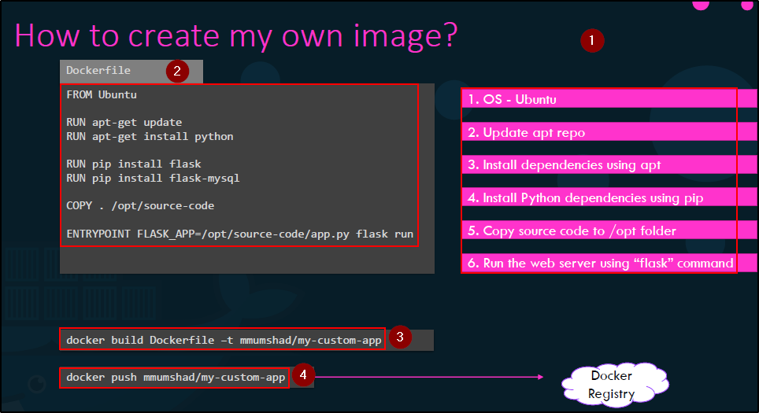

Supponiamo di avere un applicativo e di volerlo fare una Docker Image.
Questo aiuterà lo shipping e deployment.
Dobbiamo comprendere:- Cosa stiamo Containerizzando
- Quale applicazione ci stiamo creando l'immagine
- Come l'applicazione è costruita
Prima capiamo i processi per installare l'app su un OS di un certo tipo,
poi possiamo riproporre gli stessi passi in un Dockerfile,
buildare l'image con "docker build Dockerfile"
infine, pushare l'immagine con "docker push" sul Docker Hub.

NB: Questo è il comando per buildare!

I Dockerfile si scrivono così:
prima un INSTRUCTION e poi un ARGUMENT.